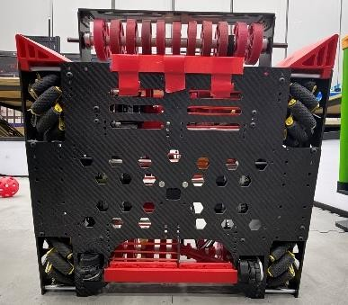
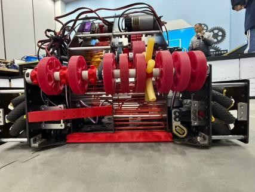

01 吸
前后两个入口
小球走前道，大球走后道，互不抢球。
447 × 392 × 357 mm，11 kg，场地上跑到 3.3 m/s。一次装 7 颗，自动三趟 12 颗。

小球走前道，大球走后道，互不抢球。
把球送到发射位，单球不到 0.1 秒。
读四月码，底盘自己转到位。
能分开打，也能一起打。
| 项目 | 数值 |
|---|---|
| 整车尺寸 | 447 × 392 × 357 mm（长 × 宽 × 高） |
| 整车质量 | 11 kg（含电池） |
| 最大速度 | 3.3 m/s（场地实测） |
| 底盘 | 5 块镂空碳纤维侧板，低重心 |
| 驱动 | 4 × goBILDA 435 rpm，自制 4:3 同步带 |
| 轮组 | 4 个 4 寸麦轮（Ø101 mm），离地间隙 10 mm |
| 定位 | PinPoint × 1 + 从动轮 × 2，配 RoadRunner |
| 装载 | 小球 4 颗 + 大球 3 颗，共 7 颗 |
| 发射 | 双飞轮 Ø72 mm / 448 g，初速约 4 m/s，仰角约 72° |
| 自动 | 单场 3 趟共 12 颗，设计目标成功率 90% 以上 |
底盘用 4 个麦轮做全向移动。定位靠 1 个 PinPoint 陀螺仪给角度，2 个从动轮给 X、Y 位移。三个矢量交给 RoadRunner，自动阶段走最短路径。

吸入轮是自己倒的 30 度硅胶轮，摩擦和压力都能调。前部做了喇叭口，球从哪个角度来都能被咬进去。
REV 3:1 齿轮箱（2000 rpm）带三级吸入和传送，吸入和传送共用一套传动。
省掉一整套分拣，代价是多一套吸入、多一套飞轮。两条道各走各的，谁也不等谁。


飞轮是自己打印的，72 mm、448 g，里面夹 6 块激光切割不锈钢配重板。转速 6000 rpm，1:1 同步带直连。凹槽限制左右偏移，30 度硅胶环加大摩擦。

自动走 RoadRunner，瞄准靠 Limelight3A，飞轮用 PIDF 锁转速。三件事各自独立。
读四月码拿偏转角，PinPoint 给朝向。
三个矢量合成位姿，按最短路径走。
每 20 ms 判一次蜂巢状态，25 秒内收工。
底盘、吸入、双飞轮各一条控制链。
蜂巢状态每 20 ms 轮询一次；20 秒、25 秒两个时间点各有一道兜底判断。
| 飞轮 | P | I | D | F |
|---|---|---|---|---|
| 小飞轮 | 80 | 0 | 20 | 13.5 |
| 大飞轮 | 200 | 0 | 20 | 13 |
用的是 DcMotorEx 自带的 PIDF，两套参数分开配。电池掉电压时落点不跟着掉。
前两版都是打完才改的。真正定版的是第三版。
自制 3D 打印云台轴承，想同时做大小球分拣、独立发射和云台自瞄。空间放不下，放弃。
 放弃
放弃
大小球分开走两条道，通道本身是通的。下旋球进框容易弹出来，放弃。
 放弃
放弃
两路都改成上旋，极大改善了球弹出的问题，定版参赛。
采用
24 支队，每队 6 场，共 36 场。10:00 开赛，每 8 分钟一场。
| 场次 | 时间 | 场地 | 联盟位置 |
|---|---|---|---|
| No.2 | 10:08 | 场地 2 | 红方 1 |
| No.11 | 11:20 | 场地 1 | 蓝方 2 |
| No.17 | 12:08 | 场地 1 | 蓝方 1 |
| No.20 | 13:30 | 场地 2 | 红方 2 |
| No.26 | 14:12 | 场地 2 | 蓝方 1 |
| No.36 | 15:22 | 场地 2 | 蓝方 2 |
从工程笔记里挑的几条，按时间倒序。
练操作：怎么开关程序、切程序、用工作站。4 名队员分两组各跑两次，暴露出距离判断不准、两名操作手配合不默契的问题。
演示自动阶段的不同方案：功率低了投不进，高了球会转出来；球吸进去却到不了位。手动阶段讲手柄，A 手柄前后左右加旋转、X 停飞轮、上排键四档功率，B 手柄上左吸取。
为硬度把亚克力板全换成碳纤维板。讨论自动阶段装球颜色策略（当时还不能自动识别）。工程笔记分工：程序给吴思晔、张高旗，结构给史习之、杨超凡。
学电钻和攻丝：丝锥要先蘸油、打孔要垂直、打完清铁屑。了解了 Java 程序框架。讨论升降结构怎么把板固定在杆上，最后用空心圆柱加胶水、螺丝竖打撑开。
吴老师演示了最新机器人，讲了小球投远时精度和抛物线角度不够的问题，还有收集装置转速、球序没法调换、电池不够用和机身抖动。新队员第一次上手底盘。
我们试过用物理公式推飞轮转速和落点的关系。假设摩擦力恒定，推出来的式子和实测对不上。后来想明白：转速一高，飞轮会形变，摩擦力本身就在变。这个关系没算出来，但测量、建模、对照实测这套流程走了一遍。